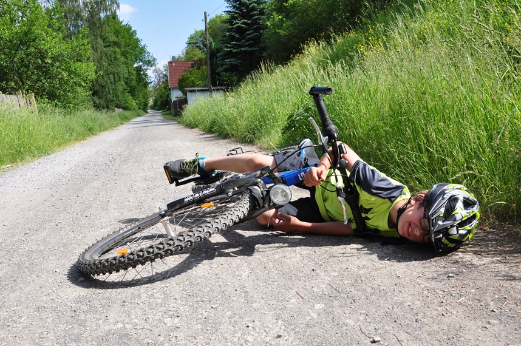

Ferie to czas odpoczynku i zabawy, ale również czas, w którym szczególną uwagę należy zwrócić na bezpieczeństwo. Przed wyjazdem warto upewnić się, że wszystkie dokumenty, takie jak dowód osobisty, ubezpieczenie i numery kontaktowe, są w porządku. Ważne jest także, aby zaplanować podróż i przygotować odpowiedni ekwipunek, jak odzież odpowiednią do warunków pogodowych i apteczkę pierwszej pomocy.
Jeśli planujesz spędzać czas na śniegu, pamiętaj o bezpiecznych zabawach, takich jak narty czy sanki. Zawsze sprawdzaj stan techniczny sprzętu, noś odpowiednią odzież ochronną, w tym kask i ochraniacze. Zadbaj o to, by dzieci bawiły się pod nadzorem dorosłych i nie wchodziły na niebezpieczne zbocza.
Jeśli spędzasz ferie nad jeziorem lub rzeką, pamiętaj o niebezpieczeństwach związanych z lodem. Lód może być cienki i niestabilny, zwłaszcza gdy temperatura się waha. Zawsze sprawdzaj grubość lodu i unikaj wchodzenia na zamknięte lub nieznane akweny wodne. Dzieci powinny zawsze bawić się pod nadzorem dorosłych.
Podczas ferii wiele osób podróżuje do różnych miejsc. Warto pamiętać o bezpieczeństwie w podróży: zawsze zapinaj pasy, przestrzegaj zasad ruchu drogowego i dostosuj prędkość do warunków atmosferycznych. Jeśli podróżujesz na nartach lub snowboardzie, upewnij się, że znasz zasady korzystania z wyciągów i przestrzegasz zasad bezpieczeństwa na stokach.
Jeśli masz dzieci, pamiętaj o odpowiedniej opiece podczas ferii. Upewnij się, że dzieci wiedzą, jak się zachować w przypadku zagrożenia, jakie numery alarmowe należy wybrać i jak unikać kontaktu z nieznajomymi. Warto także przypomnieć im o podstawowych zasadach bezpieczeństwa, takich jak nie bieganie w tłumie, noszenie ciepłych ubrań i regularne picie wody.
Ferie to czas odpoczynku i relaksu, ale zawsze warto pamiętać o bezpieczeństwie. Przy odpowiednich przygotowaniach i zachowaniu ostrożności, każdy może cieszyć się zimową przerwą w pełni. Pamiętaj o zasadach bezpieczeństwa na stoku, podczas zabaw na świeżym powietrzu i w czasie podróży, aby ferie były bezpieczne i pełne radości.
